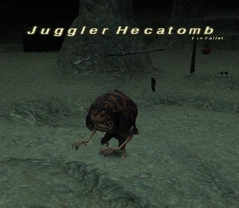

Level 75 reference · Zenith rules
|
Job: Warrior Notorious Monster |
 |

|
Zone |
Level |
Drops |
Steal |
Spawns |
Notes | ||||||
|
46-48 |
1 |
| |||||||||
|
HP = Detects Low HP; M = Detects Magic; Sc = Follows by Scent; T(S) = True-sight; T(H) = True-hearing JA = Detects job abilities; WS = Detects weaponskills; Z(D) = Asleep in Daytime; Z(N) = Asleep at Nighttime | |||||||||||
Notes:
- Respawn around H-7 on the deepest map every 21-24 hours.
- Has a potent Auto Regen.
- Soloable by: 60THF/30NIN with heavy use of Bloody Bolt and Utsusemi: Ichi.
- Around 7000HP
Adapted from Eden Wiki: Juggler Hecatomb · Contributors and history · CC BY-SA 4.0. Revision 45054. Layout, links and optional background text adapted for Zenith.